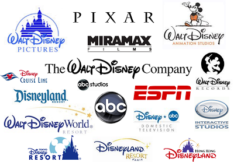
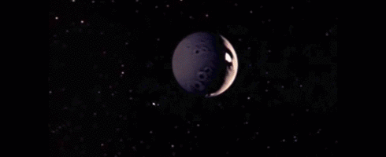
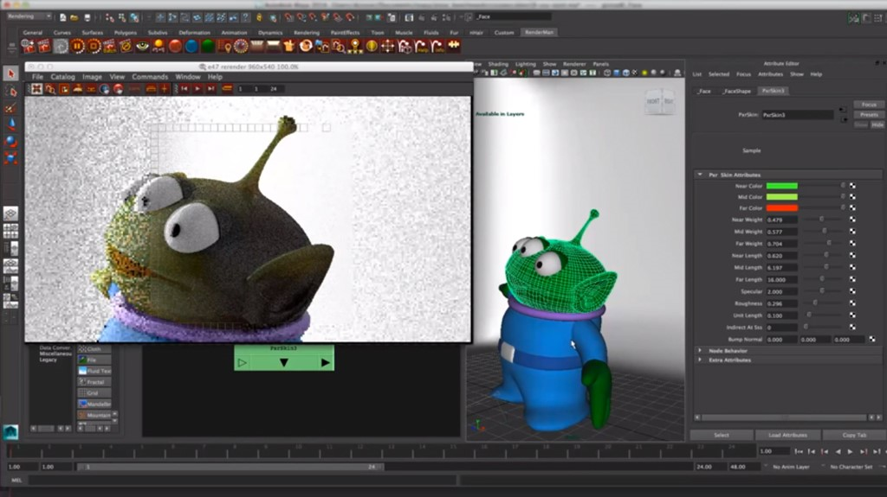
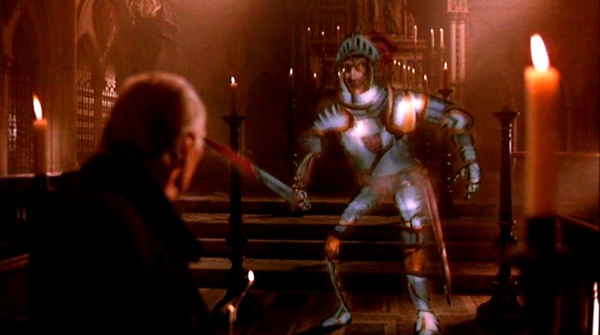
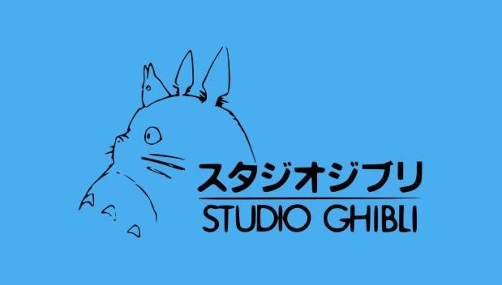

Conglomerate: a large corporation that is made up of several seemingly different and unrelated businesses. One compnay owns several smaller companies that work within it independently.
The Genesis Effect: A special graphic design technique done by the Graphics Group (now Pixar) shown in the 1982 movie Star Trek:The Wrath of Khan. It shows the quick destruction of a planet in CGI.
Renderman (formerly PhotoRealistic Renderman):a photorealistic 3D rendering software produced by Pixar Animation Studios.
The Stain Glass Knight:A special graphic design technique done by the Graphics Group (now Pixar) shown in the 1985 movie Young Sherlock Holmes. It shows the murder of a priest by a CGI generated Stain Glass Knight.
Studio Ghibli: A Japanese-based animation studio that was founded in 1985 which created multiple high-grossing and critcally-acclaimed films.
